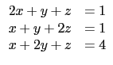

suivant: Résolution d'une récurrence linéaire
monter: Les systèmes linéaires
précédent: Étape de la réduction
Table des matières
Index
Résolution d'un système linéaire : linsolve resoudre_systeme_lineaire
linsolve permet de résoudre un système d'équations
linéaires écrite sous la forme
expression = 0.
linsolve a comme paramètres la liste des équations et la liste des
variables.
linsolve renvoie une liste qui est solution du système d'équations.
On tape :
linsolve([2*x+y+z=1,x+y+2*z=1,x+2*y+z=4],[x,y,z])
On obtient :
[1/-2,5/2,1/-2]
donc
x = - , y = , z = -
sont solutions du système :


Documentation de giac écrite par Renée De Graeve